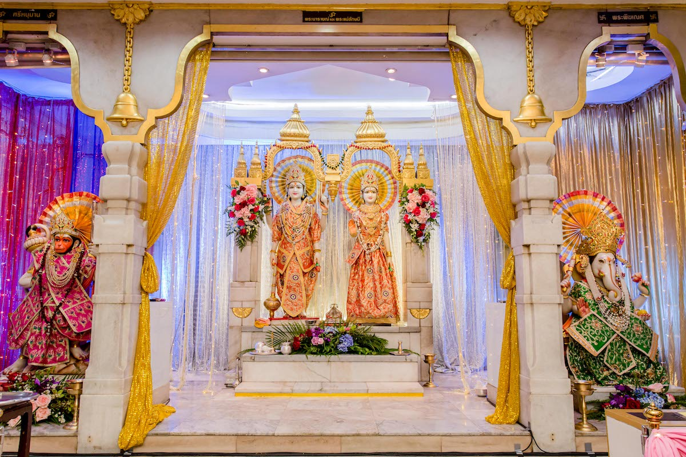
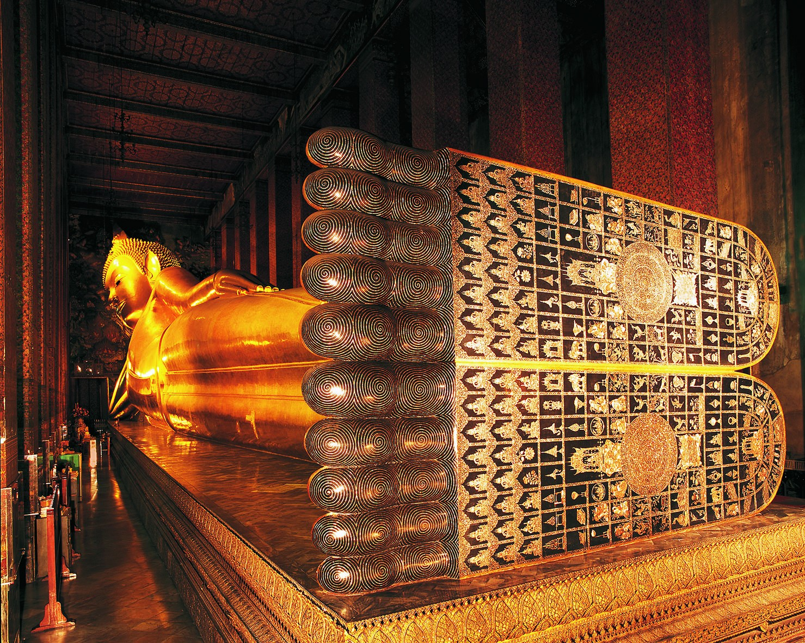

สถานที่ขอพรความรักในกรุงเทพมหานคร.
สถานที่สายมู เรื่องความรัก!!
1. ศาลพระสทาศิวะ หน้าลาน Central World

การขอพรกับ “พระสทาศิวะ” หรือ “พระศิวะ 5 เศียร” (ที่คนไทยส่วนใหญ่เข้าใจผิดว่าเป็นพระตรีมูรติ ข้อมูลจากนักวิชาการด้านประวัติศาสต์และโบราณคดี) ไม่ใช่แค่เรื่องของความรักเพียงอย่างเดียว แต่สามารถขอพรได้กับทุกเรื่อง จะทำให้สุขสมหวังตามปรารถนาทุกประการ
ของถวาย คือ ให้เน้นเป็นสีแดง เช่น ดอกกุหลาบ น้ำแดง ผลไม้สีแดง และธูปเทียนสีแดง
พิกัด 89 ถ. ราชประสงค์ แขวงลุมพินี เขตปทุมวัน กรุงเทพมหานคร 10330
2.ศาลท้าวมหาพรหม แยกราชประสงค์
เป็นสถานที่ที่ผู้คนนิยมมากราบไหว้ขอพรในเรื่องการงาน ความสำเร็จ และความรัก มีความเชื่อว่า ใครที่ได้มาสักการะ ณ ศาลแห่งนี้ พรที่ขอจะเป็นจริงสมหวังดังใจทุกอย่าง
ของถวาย คือ ผลไม้ที่ไม่ปอกเปลือก เช่น แอปเปิล สาลี่ กล้วย และพวงมาลัยดาวเรืองหรือดอกไม้สด แต่ห้ามถวายเนื้อสัตว์
พิกัด : 494 ถ. ราชดำริ แขวงลุมพินี เขตปทุมวัน กรุงเทพมหานคร 10330

3.พระแม่ลักษมี เกษรวิลเลจ

เป็นเทวีแห่งความรักที่บริบูรณ์ ช่วยบันดาลโชคลาภ และความมั่งคั่งร่ำรวยให้แก่ผู้ที่มาสักการะ สำหรับใครที่มาขอพรเรื่องความรักก็จะได้รับความสุขสมหวัง มีชีวิตคู่ที่ดี รวมไปถึงการพบเจอรักแท้ที่ซื่อสัตย์กับเราเพียงคนเดียวอีกด้วย
บทสวดบูชา “โอม สรีม ฮรีม กมลา กมลัย พระสีดา พระสีดา สรีม ฮรีม มหาลักษมี นะมาฮา”
ของถวาย คือ แอปเปิลแดง น้ำมะพร้าว และดอกบัวสีชมพู
พิกัด : 999 ถนน เพลินจิต แขวงลุมพินี เขตปทุมวัน กรุงเทพมหานคร 10330
4.ศาลพระตรีมูรติ หน้าตึก Empire Tower

ซึ่งตามตำนานพระตรีมูรติคือร่างอวตารของพระเจ้าสูงสุดสามพระองค์ในร่างเดียว ผู้คนจึงเชื่อว่าพระตรีมูนติ คือพระเจ้าผู้ประทานเรื่องขอพรความรัก หรือคนที่มีคู่อยู่แล้วก็จะรักกันมากยิ่งขึ้นไปอีก
การบูชาต้องบูชาด้วยเครื่องสักการะสีแดง เช่น กุหลาบแดง 9 ดอก ธูปแดง 9 ดอก เทียนคู่สีแดง ของเป็นคู่ต้องวางติดกัน คนที่มีคู่อยู่แล้วจะรักกันมากขึ้น คนที่ยังไม่มีคู่จะได้คู่ในเร็ววัน
สำหรับคนที่สมหวัง
ของถวาย เช่น มะพร้าว น้ำอ้อย นมสด หรือของหวานอื่น แล้วแต่ศรัทธา แต่ห้ามของคาวเด็ดขาดและหญิงสาวที่มีรอบเดือนไม่ควรเข้าไป เพราะทางความเชื่อฮินดู ถือว่าช่วงที่มีรอบเดือนจะเป็นช่วงที่ร่างกายไม่สะอาด หากเข้าไปจะเป็นการลบหลู่เทพได้
พิกัด : 89 ถ. ราชประสงค์ แขวงลุมพินี เขตปทุมวัน กรุงเทพมหานคร 10330
5.พระแม่อุมาเทวี วัดแขก สีลม
ศักดิ์สิทธิ์มากในเรื่องของการขอพรให้ความรักสมหวัง พบเจอเนื้อคู่ รวมถึงสามารถขอพรในเรื่องของการงาน การเงิน และความสำเร็จได้อีกด้วย
ของถวาย คือ น้ำแดง น้ำเปล่า หรือน้ำอ้อย ตามด้วยผลไม้และธัญพืชต่าง ๆ รวมไปถึงพวงมาลัยดอกดาวเรือง ดอกบัว หรือดอกไม้ที่มีสีเหลืองและสีแดง
พิกัด : 2 ถนนปั้น แขวงบางรัก เขตบางรัก กรุงเทพมหานคร 10500
6.ศาลเจ้าแม่ประดู่ เยาวราช

เป็นสถานที่ศักดิ์สิทธิ์อีกแห่งหนึ่งที่เป็นที่นิยมในการมาขอพรเรื่องความรัก เชื่อกันว่า จะช่วยให้ความรักสุขสมหวังตามความปรารถนาทุกประการ
สิ่งที่ใช้ไหว้ คือ ผู้คนส่วนใหญ่ที่มาขอเนื้อคู่มักจะนิยมนำผลไม้ที่มีรสหวาน 5 ชนิด ธูปแดง และเทียนแดงที่เป็นคู่มาถวาย
พิกัด : 60 ถนน เยาวพานิช แขวงสัมพันธวงศ์ เขตสัมพันธวงศ์ กรุงเทพมหานคร 10100
7.พระกฤษณะและพระแม่ราธา วัดเทพมณเฑียร เสาชิงช้า
หากผู้ใดอยากสมหวังในเรื่องความรักหรือการได้เจอคนดี ๆ มีคนรู้ใจที่จริงใจและซื่อสัตย์ ให้ขอพรกับพระกฤษณะและพระแม่ราธา จะช่วยให้สุขสมหวังดังใจปรารถนาทุกประการ
ของถวาย คือ พวงมาลัย ดอกไม้สด หรือดอกกุหลาบสีขาว
พิกัด : 136, สำราญราษฎร์ 1-2 ถนน ศิริพงษ์ แขวงเสาชิงช้า เขตพระนคร กรุงเทพมหานคร 10200
8.องค์พระนอน วัดโพธิ์ ท่าเตียน
หากมากราบไหว้ที่ปลายเท้าขององค์พระนอนแห่งวัดโพธิ์ จะทำให้ชีวิตมีความร่มเย็นเป็นสุข มีโชคลาภเงินทอง และสมหวังในเรื่องของความรัก จะพบเจอเนื้อคู่ที่ดี มีความจริงใจซื่อสัตย์
ของถวาย ให้นำดอกบัวสีชมพูไปถวาย พร้อมกับทำบุญที่ตู้รับบริจาคเป็นจำนวนเงินที่ลงท้ายด้วยเลขคู่จักดีนักแล
พิกัด : 2 ถนน สนามไชย แขวงพระบรมมหาราชวัง เขตพระนคร กรุงเทพมหานคร 10200
9.หลวงพ่อเกษร วัดท่าพระ

หลวงพ่อเกษรถือเป็นที่พึ่งทางใจของชาวท่าพระมายาวนาน มีพุทธคุณโดดเด่นในเรื่องของเมตตามหานิยม เมตตามหาเสน่ห์ เชื่อกันว่า ใครมาขอพรก็จะสมหวังในเรื่องความรัก ความเมตตา และความสุขในชีวิต
ของถวาย แนะนำว่าให้เป็นดอกไม้สดหรือพวงมาลัยดอกดาวเรือง เพื่อเสริมความรุ่งเรือง
พิกัด : 20/1 ซอย จรัญสนิทวงศ์ 4 แขวงวัดท่าพระ เขตบางกอกใหญ่ กรุงเทพมหานคร 10600
10.ศาลแม่นาค วัดมหาบุศย์ พระโขนง

จากตำนานเรื่องราวความรักอันคงมั่นไม่เปลี่ยนแปลง ศาลแม่นาคจึงเป็นสถานที่ขอพรเรื่องความรักที่ศักดิ์สิทธิ์มาก ๆ ทำให้สมหวังดังปรารถนา พบเจอเนื้อคู่ที่ดี มีความรักที่มั่นคง สำหรับใครที่ยังโสด ย่านาคก็พร้อมช่วยเสมอ
ของถวาย คือ ผู้คนส่วนใหญ่ที่มาขอพรมักจะนำชุดไทย เครื่องประดับ และของเล่นเด็กมาถวาย
พิกัด : 747 อ่อนนุช 7 แขวง อ่อนนุช แขวงสวนหลวง กรุงเทพมหานคร 10250